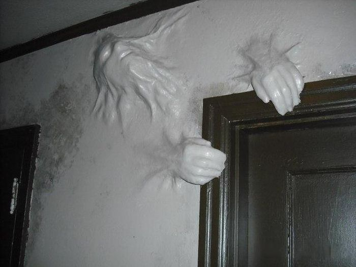

'I hate it when my sister Charlie has to go away by..... horrorinpureform
I hate it when my sister Charlie has to go away. My parents constantly try to explain to me how sick she is. That I am lucky for having a brain where all the chemicals flow properly to their destinations like undammed rivers. When I complain about how bored I am without a little sister to play with, they try to make me feel bad by pointing out that her boredom likely far surpasses mine, considering she's confined to a dark room in an institution. I always beg for them to give her one last chance. Of course, they did at first. Charlie has been back home several times, each shorter in duration than the last. Every time without fail, it all starts again. The neighbourhood cats with gouged out eyes showing up in her toy chest, my dad's razors found dropped on the baby slide in the park across the street, mom's vitamins replaced by bits of dishwasher tablets. My parents are hesitant now, using "last chances" sparingly. They say her disorder makes her charming, makes it easy for her to fake normalcy, and to trick the doctors who care for her into thinking she is ready for rehabilitation. That I will just have to put up with my boredom if it means staying safe from her. I hate it when Charlie has to go away. It makes me have to pretend to be good until she is back.
'So I lost my phone by.... Lynxx
Last night a friend rushed me out of the house to catch the opening act at a local bar's music night. After a few drinks I realized my phone wasn't in my pocket. I checked the table we were sitting at, the bar, the bathrooms, and after no luck I used my friend's phone to call mine.After two rings someone answered, gave out a low raspy giggle, and hung up. They didn't answer again. I eventually gave it up as a lost cause and headed home.I found my phone laying on my night stand, right where I left it.
'A message from your Personal Demons by.... MrGarm

This illustraition was made by the talented JnRnCrews
Hello, my dear. You do not know who I am, but I know you. I am one of the three demons that were assigned to you at birth. You see, some people in this world are destined for greatness, destined to live happy, fulfilling lives. You, I am afraid, are not one of those people, and it is our job to make sure of that.Who are we? Oh yes, of course, how rude of me. Allow me to introduce us: Shame is my younger brother, the demon on your left shoulder. Shame tells you that you're a freak; that those thought you have are not normal; that you will never fit in. Shame whispered into your ear when your mother found you playing with yourself as a child. Shame is the one who makes you hate yourself. Fear sits on your right shoulder. He is my older brother, as old as life itself. Fear fills every dark corner with monsters, turns every stranger on a dark street into a murderer. Fear stops you from telling your crush how you feel. He tells you it is better not to try than let people see you fail. Fear makes you build your own prison.Who am I, then? I am the worst of your demons, but you see me as a friend. You turn to me when you have nothing else, because I live in your heart. I am the one who forces you to endure. The one who prolongs your torment.Sincerely, Hope .
'He Stood Against My Window by...... sabethook

I don't know why I looked up, but when I did I saw him there. He stood against my window. His forehead rested against the glass, and his eyes were still and light and he smiled a lipstick-red, cartoonish grin. And he just stood there in the window. My wife was upstairs sleeping, my son was in his crib and I couldn't move I froze and watched him looking past me through the glass.Oh, please no. His smile never moved but he put a hand up and slid it down the glass, watching me. With matted hair and yellow skin and face through the window.I couldn't do anything. I just stayed there, frozen, feet still in the bushes I was pruning, looking into my home. He stood against my window.
'This New Old House by.... BatoutotHell821
We bought an old house, my boyfriend and I. He's in charge of the "new" construction – converting the kitchen in to the master bedroom for instance, while I'm on wallpaper removal duty. The previous owner papered EVERY wall and CEILING! Removing it is brutal, but oddly satisfying. The best feeling is getting a long peel, similar to your skin when you're peeling from a sunburn. I don't know about you but I kinda make a game of peeling, on the hunt for the longest piece before it rips.Under a corner section of paper in every room is a person’s name and a date. Curiosity got the best of me one night when I Googled one of the names and discovered the person was actually a missing person, the missing date matching the date under the wallpaper! The next day, I made a list of all the names and dates. Sure enough each name was for a missing person with dates to match. We notified the police who naturally sent out the crime scene team. I overhead one tech say "yup, it's human." Human? What's human? "Ma'am, where is the material you removed from the walls already? This isn't wallpaper you were removing."